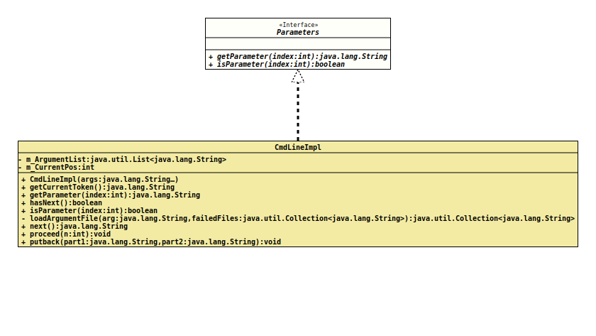

Interface Parameters
- All Known Implementing Classes:
ArgumentParser.CmdLineImpl
Provides access to a list of arguments on the command line.
Objects that implement this interface are passed to an instance of
CmdLineValueHandler
to make it safe and easy to parse additional parameters for options.
- Author:
- Thomas Thrien (thomas.thrien@tquadrat.org)
- Version:
- $Id: Parameters.java 884 2021-03-22 18:02:51Z tquadrat $
- Since:
- 0.1.0
- UML Diagram
-

UML Diagram for "org.tquadrat.foundation.config.spi.Parameters"
{kind=link}
-
Method Summary
Modifier and TypeMethodDescriptiongetParameter(int index) Returns the additional parameter to a related option.booleanisParameter(int index) Tests whether the given index is for an additional parameter to a related option.
-
Method Details
-
getParameter
Returns the additional parameter to a related option.
Specifying 0 for
indexwill retrieve the token next to the option. For example, if the command line looks like-o abc -d xthen
getParameter(0)for the option "-o" returns "abc";getParameter(1)would return "-d", but as this is an option, aCmdLineExceptionwill be thrown instead.- Parameters:
index- The index for the requested parameter; must be 0 or greater.- Returns:
- The requested parameter.
- Throws:
CmdLineException- An attempt is made to access a non-existent index, or the index is for a non-parameter entry on the command line.
-
isParameter
Tests whether the given index is for an additional parameter to a related option. The first additional parameter has the index 0, a second one will have 1 and so on.
Assume the command line looks like this:
-o abc def -d xThen
isParameter(0)andisParameter(1)would returntrue, butisParameter(3)returnsfalse:xis an additional parameter, but for the option-din this case.- Parameters:
index- The index for the requested parameter; must be 0 or greater.- Returns:
trueif the argument at the given location is an additional parameter for the current option,falseif not.- Since:
- 0.1.2
-